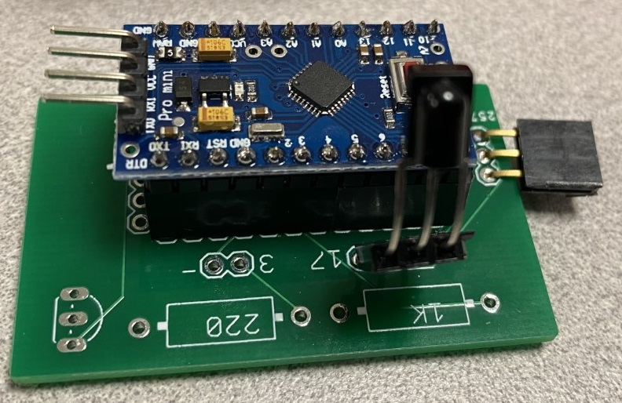

Infra-red Receive
An infra-red receive is accomplished by using a printed-circuit board which looks like:

The connecting wire is similar to a servo 3-wire connector (gnd-vcc-data)
This is connected to a digital output on the micro-bit. When the ir receiver detects a pulse, it sets the
digital output to a 1